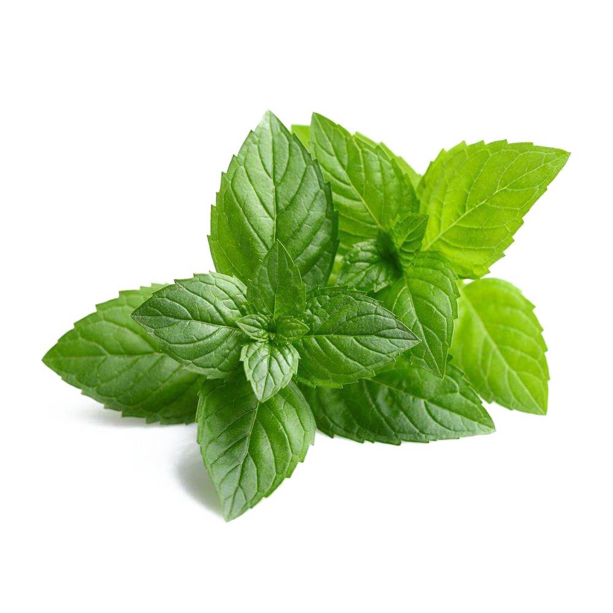
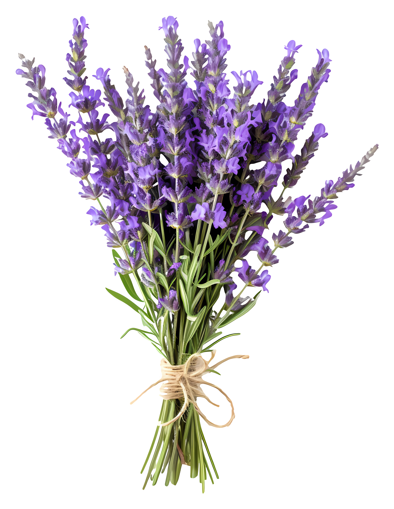
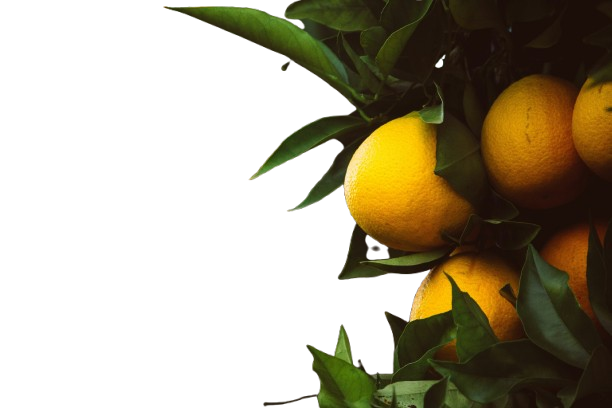
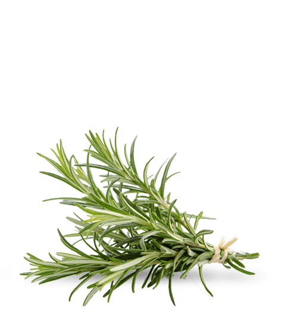

Aloe Vera
A medicinal plant known for its soothing gel used in skincare and traditional medicine.
A medicinal plant known for its soothing gel used in skincare and traditional medicine.

A common aromatic herb used in cooking, teas, and for its refreshing flavor.

A spice made from the bark of cinnamon trees, used in sweet and savory dishes.

A tree producing dates, a staple fruit in the Middle East with high nutritional value.

An aromatic plant with purple flowers, used in perfumes, teas, and herbal remedies.

A citrus tree producing lemons, widely used in cooking, drinks, and medicine.

An evergreen tree producing olives, essential for olive oil and Mediterranean cuisine.

A fragrant evergreen herb, used in cooking and traditional remedies.